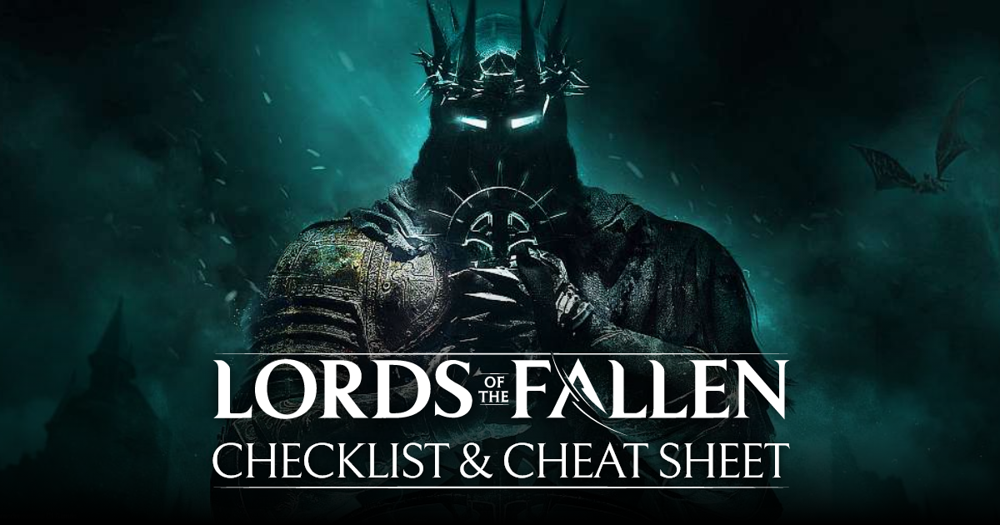

Lords of the Fallen (2023) Checklist & Cheat Sheet
Welcome to the completionist's guide, checklist, & cheat sheet for Lords of the Fallen (2023). This guide aims to provide a comprehensive suite of checklists for players to use as a sort of cheat sheet during playthroughs of Lords of the Fallen.
Warning: Contains Spoilers!
Playthrough Checklist
- Defiled Sepulchre
- Abandoned Redcopse
- Skyrest Bridge
- Pilgrim's Perch
- Forsaken Fen
- Fitzroy's Gorge
- Lower Calrath
- Upper Calrath A
- Sunless Skein
- Cistern
- Revelation Depths
- Upper Calrath B
- Fief of the Chill Curse
- Pilgrim's Perch - Belled Rise
- Path of Devotion
- Manse of the Hallowed Brothers
- Tower of Penance
- Abbey of the Hallowed Sisters
- The Empyrean
- Path to Bramis Castle
- Bramis Castle
- Radiance Ending
- Inferno Ending
- Umbral Ending
- Preparing for NG+
Defiled Sepulchre
- Obtain Forsworn
- Obtain a Saintly Quintessence
Abandoned Redcopse
- Activate the Vestige of Ranik
- Defeat Holy Bulwark Otto
- Fight the Lightreaper (Do NOT kill him here if you wish to complete Andreas, Kukajin, or Paladin Isaac's quests)
- Obtain the Flayed Skin for Isaac's quest
- Activate the Vestige of Hannelore
- Talk to the Iron Wayfarer next to the Vestige
- Soulflay the Abandoned Woman's Stigma
- Obtain the Broken Sword
- Obtain the Hallowed Condemnation
- Obtain the Pilgrim Garb and the Pilgrim Skirt
- Activate the Vestige of Marco the Axe
- Obtain the Raw Mangler Axe
- Obtain the Umbral Eye of Betrayed Eliard
- Soulflay the Choking Man's Stigma
- Obtain the Mineowner's Ring
- Obtain the Pilgrim Hood and Pilgrim Bandages
- Talk to the the Iron Wayfarer again by the exit to receive a Vestige Seed
Skyrest Bridge
- Obtain the Rusty Cutter
- Defeat Pieta, She of Blessed Renewal
- Soulflay Pieta's Stigma
- Obtain the Remembrance of Pieta, She of Blessed Renewal
- Obtain Sanctify
- Activate the Vestige of Ethryg
- Talk to Exacter Dunmire
- Obtain the Dark Crusader's Challenge
- Talk to Pieta
- Talk to Molhu in Umbral
- Obtain the Putrid Mother's Embrace
- Talk to Stomund, Captain of the Fidelis
- Talk to Eustace
- Talk to Nathaniel
- Obtain Aura of Tenacity
- Talk to Andreas of Ebb
Pilgrim's Perch
- Talk to Thehk-Ihir
- Obtain the Stick
- Obtain the Reject's Blade
- Obtain the Pale Eye Shield
- Obtain the Bloody Hatchet
- Soulflay the Pilgrim's Stigma
- Activate the Vestige of Chabui
- Obtain the Bell Staff
- Soulflay the Follower of Adyr's Stigma
- Obtain the Faithful Bludgeon
- Obtain the Crimson Rector Sword
- Obtain the Skyrest Bridge Key
- Obtain the Crimson Rector Shield
- Obtain the Descrier Guide Set
- Obtain the Princess' Sting
- Talk to the Tortured Prisoner
- Soulflay the King's Stigma
- Obtain the Searing Accusation for the Tortured Prisoner
- Give the Searing Accusation to the Tortured Prisoner
- Obtain the Tortured Prisoner's Head Cage
- Obtain the Broken Bucket and Condemned Set
- Talk to the Unnamed Red Coat (Damarose the Marked)
- Obtain the Bloody Aspergillum for Dunmire
- Defeat Scourged Sister Delyth
- Obtain the Scourged Sister Flail and Scourged Sister Garb
- Obtain a Saintly Quintessence
- Obtain the Hallowed Bow
- Obtain the Plain Shield
- Obtain the Defaced Ring
- Obtain the Hallowed Praise
- Obtain the Perdam Falchion
- Obtain the Thorned Crimson Rector Sword
- Activate the Vestige of Blind Agatha
- Talk to the Unnamed Man in the Bellroom (Byron)
- Obtain the Umbral Eye of Rosamund
- Obtain the Antique Hallowed Sentinel Set
- Obtain the Hallowed Sentinel Scripture for Dunmire
- Obtain the Cleric's Benediction
- Obtain the Bowl of Revelations for Molhu
- Soulflay the Caged Stigma
- Obtain the Partisan Crossbow
- Obtain the Book of Sin for Dunmire
- Obtain the Prison Cell Key and free Gerlinde
- Obtain the Orian Preacher Set
- Obtain the Defiance Ring
- Talk to Damarose the Marked before the boss
- Defeat Gentle Gaverus, Mistress of Hounds
- Talk to Damarose again after the boss
Forsaken Fen
- Activate the Vestige of Olleren
- Give items to Exacter Dunmire
- Give the Bowl of Revelations to Molhu
- Talk to Gerlinde
- Talk to Thehk-Ihir next to the Vestige
- Defeat the Congregator of Flesh
- Soulflay the Congregator's Stigma
- Obtain the Remembrance of the Congregator of Flesh
- Activate the Vestige of Valade
- Talk to Byron
- Obtain the Angel's Axe
- Obtain the Cursewyrm Ring
- Obtain the Shuja Harmony Hoop
- Obtain Resh-Mesah's Sword
- Soulflay the Lampbearer's Stigma
- Help the Petrified Woman (Kukajin) by using any radiant healing spell or holy throwable item that cleanses status effects
- Obtain the Pendant of Induration
- Obtain Wilmarc's Catalyst
- Obtain a Saintly Quintessence
- Talk to the Iron Wayfarer
- Obtain the Verdure Ring
- Obtain Vanguard Barros' Rosary for Dunmire
- Defeat the Mendacious Visage
- Obtain the Umbral Eye of the Pale Butcher
- Obtain the Pale Butcher's Blade
- Obtain the Pyric Cultist Staff
- Obtain the Angel of the Void Set
- Summon Kukajin for the boss fight
- Defeat the Hushed Saint
- Soulflay the Hushed Saint's Stigma
- Obtain the Remembrance of the Hushed Saint
- RADIANCE ENDING: Cleanse the Beacon
- Soulflay the Stigma of a Little Friend
- Talk to Thehk-Ihir next to the Vestige
- Activate the Vestige of the Pale Butcher
- Talk to Exacter Dunmire
- Pay Kukajin's invoice
- Obtain the Panoptic Ring
- Obtain the Pendant of Burden
Fitzroy's Gorge
- Obtain Piercing Light
- Defeat Crimson Rector Percival
- Obtain Bloodlust
- Talk to Damarose at the cliff edge (if she's not here, that's ok)
- Soulflay the Fallen Victim's Stigma
- Obtain the Ring of Radiant Preeminence
- Obtain Fitzroy's Sword
- Talk to Drustan
- Obtain the Cracked Rune Tablet for Gerlinde
- Obtain the Hallowed Knight Shield
- Defeat the Ruiner
- Obtain the Ruiner Shield and Ruiner Boots
- Obtain the Nohuta Ritual Hammer
- Activate the Vestige of Betrayed Eliard
- Give items to Exacter Dunmire
- Give the Cracked Rune Tablet to Gerlinde
- Talk to Damarose at the Shrine of Adyr
- Obtain the Crimson Ritual Fervour
- Obtain the Orian Preacher Hammer
- Obtain the Umbral Eye of Hooded Antuli
- Obtain Fitzroy's Set
- Soulflay the Stigma of a Tower Battle
- Optional: Fight the Lightreaper (Do NOT kill him here if you wish to complete Andreas, Kukajin, or Paladin Isaac's quests)
- Obtain a Saintly Quintessence
- Obtain the Ring of Night's Fire
- Obtain the Taxidermist's Hammer
Lower Calrath
- Soulflay the Stigma of Isaac Kneeling
- Obtain the Wooden Dark Crusader Cross
- Activate the Vestige of Sebastian
- Obtain the Heavenly Vial
- Defeat the Infernal Enchantress
- Obtain the Infernal Enchantress Flail & Infernal Enchantress Helm
- Obtain the Infernal Enchantress Flesh for Damarose
- Obtain the Magma Ring
- Obtain the Pyric Cultist Flail
- Obtain the Grievous Ring
- Obtain the Poisoning Knife
- Obtain Rosamund's Sword
- Obtain the Cinder Arrows
- Obtain the Bow of the Convert
- Talk to the Iron Wayfarer
- Soulflay Elianne's Stigma
- Obtain the Odd Stone
- Obtain the Defiled Infantry Bow
- Activate the Vestige of Lydia the Numb Witch
- Give the Infernal Enchantress Flesh to Damarose
- Talk to Drustan and give him Unripe Berries
- Obtain Wheezing
- Obtain the Prole Set
- Obtain the Sword of Skin and Tooth
- Obtain the Scale-Breaker
- Soulflay the Miner's Stigma
- Obtain Adyr's Mark Ring
- Obtain an Antediluvian Chisel
- Obtain Tassara's Axe
- Obtain the Serrated Staff
- Obtain the Purifying Balm
- Obtain Ravager Gregory's Rosary for Dunmire
- Obtain the Split Crossbow
- Obtain Lava Burst
- Obtain a Saintly Quintessence
- Obtain the Fallen Lord's Sword
- Obtain the Ring of Nourishment
Upper Calrath A
- Summon Kukajin for the boss fight
- Defeat the Spurned Progeny
- Obtain the Giant Eyeball for the Tortured Prisoner
- Obtain the Spurned Progeny Flesh for Damarose
- Soulflay the Spurned Progeny's Stigma
- Obtain the Remembrance of a Spurned Progeny
- Activate the Vestige of Doln
- Give items to Dunmire
- Pay Kukajin's invoice
- Give the Giant Eyeball to the Tortured Prisoner
- Give the Spurned Progeny Flesh to Damarose
- Obtain the Scornful Effigy
- Obtain the Old Mournstead Large Sword
- Obtain the Crushing Gaze
- Obtain the Pendant of Parting
- Obtain Pledge to Adyr
- Obtain a Saintly Quintessence
- Obtain the Old Mournstead Sword
- Obtain the Lump Hammer
- Obtain Adyr's Authority
- Soulflay the Leader's Stigma
- Obtain the Chipped Rune Tablet for Gerlinde
- Obtain the Overseer Set
- Obtain the Umbral Tome for Dunmire
Sunless Skein
- Activate the Vestige of Hooded Antuli
- Give items to Dunmire
- Give the Chipped Rune Tablet to Gerlinde
- Soulflay the Stigma of a Falling Man
- Obtain the Devoted Chopper
- Obtain the Ring of the First of the Beasts
- Obtain Edict's Aim
- Obtain the Pointed Stick
- Obtain the Fulvirano Shield
- Obtain the Shield of Whispers
- Soulflay the Stigma of a Miner
- Obtain the Miner's Pendant
- Obtain the Mask of Wrath
- Activate the Vestige of Katrin
- Talk to Byron
- Obtain the Ring of Bones
- Obtain the Sovereign Protector Set
- Obtain a Saintly Quintessence
- Obtain Berinon's Ring
- Obtain the Sunless Skein Key
Cistern
- Obtain the Nohuta Effigy
- Obtain the Adyr-Worshipper's Saw for Damarose
- Soulflay the Preacher's Stigma
- Obtain the Nohuta Polearm
- Defeat the Bringer of Silence, Bringer of Nullity, and Bringer of Stillness
- Obtain Marco's Axe
- Defeat the Skinstealer
- Obtain the Drainage Control Key
- Do NOT take the elevator after the Skinstealer until you have informed Byron of Winterberry if you wish to complete his quest. Instead, activate the Drainage Control Lever and continue into the Revelation Depths
Revelation Depths
- Obtain the Shovel-Head
- Obtain the Old Mournstead Pike
- Obtain the Miner's Desperation
- Obtain the Umbral Eye of Dieter
- Obtain the Chipped Spear
- Obtain a Saintly Quintessence
- Obtain the Enhanced Snake Oil Grenade
- Obtain the Nimble Ring
- Obtain the Pendant of Atrophy
- Find Winterberry
- Tell Byron about Winterberry
- Obtain Justice
- Obtain Lost Berescu's Catalyst
- Obtain the Enhanced Short Javelin
- Obtain the Marksman Crossbow
- Obtain Death's Finger
- Obtain the Exacter Dagger
- Activate the Vestige of Lost Berescu
- Give the Adyr-Worshipper's Saw to Damarose
- Summon Kukajin for the boss fight
- Defeat Harrower Dervla, the Pledge Knight and the Unbroken Promise
- Obtain the Dark Crusader's Call for Dunmire
- Soulflay the Unbroken Promise Stigma
- Obtain the Remembrance of the Unbroken Promise
Upper Calrath B
- NOW you can take the elevator after the Skinstealer
- Activate the Vestige of the Forgotten Guardian
- Pay Kukajin's invoice
- Give items to Dunmire
- Obtain the Blacksmith's Pride
- Obtain Queen Verena II's Ring
- Soulflay the Imprisoned Stigma
- RADIANCE ENDING: Cleanse the Beacon
- Soulflay the Fighter's Stigma
- Soulflay the Stigma of a Robbery
- Obtain the Calrath Guardsman Set
- Obtain the Noblewoman Set (required for the Tortured Prisoner's quest)
- Soulflay the Stigma of an Alley Fight
- Talk to the Iron Wayfarer next to the Stigma
- Soulflay the Bargainer's Stigma
- Obtain the Melted Dark Crusader Sword
- Obtain the Moth Ring
- Soulflay the Stigma of the Rune of Adyr (beyond the Umbral gate)
- Talk to the Iron Wayfarer again next to the Stigma (you might need to rest to get him to show up beyond the Umbral gate)
- Obtain the Fief Key at Skyrest
- Talk to Byron and Winterberry at Skyrest
- Equip the Noblewoman Set and talk to the Tortured Prisoner in the Spurned Progeny arena
Fief of the Chill Curse
- Use Fief Key to open the Bell Door by the Vestige of Marco the Axe
- Obtain Splitting Axe
- Defeat Kinrangr Guardian Folard Boss
- Obtain an Antediluvian Chisel
- Activate the Vestige of Svornil
- Soulflay the Stigma of Isaac Kneeling
- Soulflay Yorke's Stigma
- Defeat Griefbound Rowena
- Obtain a Saintly Quintessence
- Obtain Udirangr Shaman Bow
- Obtain Sunken Beseecher
- Obtain Kinrangr Rebel's Hammer
- Obtain Halting Gesture
- Talk to Drustan and light the fire
- Obtain Pestilent Blade
- Obtain Glacier Ring
- Obtain Ancestor's Sword
- Obtain Putrid Child Sword
- Obtain Putrid Polearm
- Obtain Bow of the Mutilated
- Soulflay the Healer's Stigma
- Obtain J'deyl Set
- Activate the Vestige of Loash
- Talk to Thehk-Ihir
- Summon Kukajin for the boss fight
- Defeat the Hollow Crow
- Soulflay the Hollow Crow's Stigma
- Obtain the Remembrance of the Hollow Crow
- RADIANCE ENDING: Cleanse the Beacon
- Obtain Kinrangr Leader's Axe
- Optional: Fight the Lightreaper (Do NOT kill him here if you wish to complete Andreas, Kukajin, or Paladin Isaac's quests)
- Obtain Yorke's Ring
- Obtain the Beast Axe
- Obtain a Saintly Quintessence
- Soulflay the Dying Man's Stigma
- Pay Kukajin's invoice
- Talk to Andreas
- Soulflay the Stigma of Andreas of Ebb
- Obtain Andreas of Ebb's Book of Lineage and return it to him
Pilgrim's Perch - Belled Rise
- Obtain the Pilgrim's Perch Key
- Obtain Devotion's Might
- Obtain the Brawn Ring
- Obtain the Hammer of Holy Agony
- Obtain the Umbral Eye of Iorelo the Cursed Knight
- Obtain Bloody Glory
- Defeat the Sacred Resonance of Tenacity
- Complete the Path of Devotion before continuing past the Secred Resonance of Tenacity boss fight (just for convenience)
- Obtain Bloodletter
- Obtain the Slinger's Ring
- Obtain the Cleric's Benediction
- Obtain the Hallowed Sentinel Scripture for Dunmire (if missed before)
Path of Devotion
- Activate the Vestige of Dieter
- Talk to Thehk-Ihir
- Obtain the Dark Crusader's Convalescence
- Obtain the Anvil Hammer
- Soulflay Isaac's Stigma
- Obtain Diminishing Missile
- Obtain a Saintly Quintessence
- Obtain the Hungering Knot
- Soulflay the Paladin's Stigma
- Defeat the Paladin's Burden
- Obtain the Umbral-Tinged Flayed Skin
- Obtain the Umbral Eye of Loash
- Obtain the Pureblade Mace and Pureblade Shield
Manse of the Hallowed Brothers
- Activate the Vestige of Ferrers the Charred
- Return to where you got the Flayed Skin in Defiled Sepulcher and interact with the Umbral door to get the Paladin set
- Talk to the Iron Wayfarer
- Obtain the Cursed Set
- Obtain the Lucent Sword Ring
- Obtain the Manse Kitchen Key
- Activate the Vestige of Brother Jeremiah
- Talk to Thehk-Ihir
- Obtain Duty's Chime
- Soulflay the Stigma of a Meeting
- Obtain an Antediluvian Chisel
- Obtain the Trinity Shield
- Soulflay the Rector's Stigma
- Obtain the Damaged Standard for Stomund
- Soulflay the Sentinel's Stigma
- Soulflay Byron's Stigma
- Defeat the Abiding Defenders
- Obtain the Flail of Wisdom
- Obtain the Ring of Shelter
- Obtain Abbot Vernoff's Key
- Obtain a Saintly Quintessence
- Soulflay the Stigma of Pieta's Lady
Tower of Penance
- Defeat Blessed Carrion Knight Sanisho
- Obtain the Braided Ring
- Obtain Jeffrey's Dagger
- Soulflay the Prisoner's Stigma
- Obtain the Perception Wisp for Dunmire
- Obtain the final Rune Tablet for Gerlinde
- Obtain Infernal Guardian
- Obtain the Bramble Ring
- Obtain Pious
- Obtain the Assassin's Bow
- Obtain a Saintly Quintessence
- Soulflay the Tortured Lovers' Stigma
- Summon Kukajin for the boss fight
- Defeat Tancred, Master of Castigations & Reinhold the Immured
- Soulflay the Stigma of Tacred
- Obtain the Remembrance of Tancred, Master of Castigations & Reinhold the Immured
- Obtain Tancred's Key
- Obtain the Radiant Purifier Set
- RADIANCE ENDING: Cleanse the Beacon
- Pay Kukajin's invoice
-
Turn in the final Rune Tablet:
- Give the final Rune Tablet to Sparky to release him for the achievement and make Gerlinde leave
- Give the final Rune Tablet to Gerlinde to kill Sparky and upgrade Gerlinde's shop
- UMBRAL ENDING: Buy the Scouring Clump from Molhu
- Buy everything from Dunmire before giving him the Perception Wisp
- Give Dunmire the Perception Wisp
- Talk to Dunmire at the Sunless Skein
- UMBRAL ENDING: Use the Scouring Clump at the alter at the end of the Revelation Depths to access the Mother's Lull
- Talk to Dunmire inside the Mothers Lull
- UMBRAL ENDING: Get Damarose's Seedpod from the NPC in Mothers Lull and use it on Damarose (NOTE: this will kill her)
Abbey of the Hallowed Sisters
- Talk to Stomund on the path from the Manse to the Abbey
- Soulflay the Stigma of the Hallowed Sentinels
- Defeat Abbess Ursula
- Obtain the Abbess Staff
- Obtain the Weeping Abbess Mitre
- Obtain the Enhanced Accusing Spirit
- Activate the Vestige of Rosamund
- Talk to Thehk-Ihir
- Soulflay the Stigma of the Reborn
- Obtain the Hallowed Sentinel Prayer
- Obtain the Putrid Child Set
- Talk to Stomund upstairs
- Obtain the Heretical Sentinel's Hammer
- Obtain the Unbridled Focus
- Obtain Consecrate
- Obtain The Toll
- Obtain the Enhanced Poison Javelin
- Obtain the Multi-Shot Crossbow
- Obtain the Impious Nohuta's Ring
- Obtain the Umbral Eye of Blind Agatha
- Get the Tattered Banner from one of the non-boss Abbess
- Give Stomund the Damaged Standard and the Tattered Banner
- Defeat the Rapturous Huntress of the Dusk (the Iron Wayfarer will join the fight if you've been following his questline, and he'll steal the Rune of Adyr. Otherwise, you'll get it after the boss fight.)
- Obtain the Sanctified Huntress Spear
- Obtain the Rapturous Huntress Helm
- Obtain a Saintly Quintessence
- Obtain Lacerating Weapon
- Obtain the Shield of Piercing Light
- Soulflay the Stigma of Pieta's Request
The Empyrean
- Obtain Saint Salonor's Ring
- Activate the Vestige of Iorelo the Cursed Knight
- Soulflay the Prayer's Stigma
- Find Stomunds impaled body and get his gear
- Obtain the Enhanced Banner Javelin of Assault
- Obtain the Bountiful Ring
- Obtain the Umbral Eye of Doln
- Soulflay the Stigma of the Judge's Protection
- Find Thehk-Ihir's body and get his gear after opening the church gates
- Obtain the Shield of the Moonlit Emissary
- Obtain the Putrid Child Catalyst
- Obtain a Saintly Quintessence
- Obtain the Empyrean Church Key
- Obtain the Lucent Sword Shield
- Obtain the Thorned Chalice
- Summon Kukajin for the boss fight
- Defeat Judge Cleric, the Radiant Sentinel
- Soulflay Judge Cleric's Stigma
- Obtain the Remembrance of Judge Cleric, the Radiant Sentinel
- RADIANCE ENDING: Cleanse the Beacon
- Obtain the Enhanced Holy Grenade
- Pay Kukajin's invoice
Path to Bramis Castle (Upper Calrath B)
- Soulflay the Stigma of a Battle near the Skyrest Bridge shortcut to Upper Calrath
-
Summon help for the boss fight:
- Summon Andreas for the boss fight to continue his quest (it seems you can summon him and die to the boss and still progress his quest)
- Summon Paladin Isaac's for the boss fight to complete his quest
- Summon Kukajin for the boss fight to continue her quest
- Defeat the Lightreaper
- Obtain the Lightreaper Flesh for Damarose
- Obtain the Lightreaper's Umbral Parasite
- Soulflay the Lightreaper's Stigma
- Obtain the Remembrance of the Lightreaper
- Defeat Andreas of Ebb in the alley after the boss fight
- Obtain Andreas of Ebb's Sword, Andreas of Ebb's Book of Lineage, Andreas of Ebb's Ring, & Andreas of Ebb's Sleeves
- Defeat the Iron Wayfarer in front of the gates to Bramis Castle
- Obtain the Rune of Adyr
- UMBRAL ENDING: DO NOT OPEN THE CASTLE GATE WITH THE NORMAL RUNE
- UMBRAL ENDING: Use the Lightreapers Umbral Parasite on the column next to Molhu
- UMBRAL ENDING: Get Gerlinde's Seedpod from the NPC in Mothers Lull and use it on Gerlinde (NOTE: this will kill her)
- UMBRAL ENDING: Give the Rune of Adyr to the NPC in Mother's Lull to get the Withered Rune of Adyr and Melchior's Seedpod
- Give the Lightreaper Flesh to Damarose (if she's still alive)
- Pay Kukajin's invoice (if you summoned her for the Lightreaper boss fight)
Bramis Castle
- Get the Executioner's Axe
-
Continue Damarose's quest:
- Talk to Damarose at the entrance and buy everything
- OR Defeat Damarose the Marked (if you've been cleansing the beacons)
- Obtain a Saintly Quintessence
- Soulflay Bramis' Stigma
- Obtain Sellsword
- Soulflay Drustan's Stigma
- Obtain Drustan's Set
- Obtain Infernal Slash
- Soulflay the Stigma of Escape
- Obtain Charred Letter
- Obtain Grinning Axe
- Obtain Lord Axe
- Obtain Ring of Infernal Devotion
- Activate the Vestige of the Bloody Pilgrim
- Give the Charred Letter to the Tortured Prisoner (be sure to do this BEFORE killing the Sundered Monarch to make her move to Bramis Castle)
- Buy everythng from the Tortured Prisoner
- Obtain Paladin's Pendant
- Obtain the Eviscerating Spear
- Obtain Lord Set
- Obtain the Royal Key
- Obtain a Saintly Quintessence
- Soulflay the Stigma of Bramis and Fitzroy
- Obtain the Pendant of Infernal Oblation
- Obtain a Saintly Quintessence
- Obtain the Grace of Adyr Set
- Obtain the Swaddling Cloth
- Give the Swaddling Cloth to the Tortured Prisoner before killing the Sundered Monarch (WARNING: this is located quite close to the boss and must be delivered before killing the boss)
- Obtain Lord Mask
- Obtain Bartholomew's Hammer
- Obtain Umbral Eye of Lydia the Numb Witch
- Summon Kukajin for the boss fight
- Defeat the Sundered Monarch
- Soulflay the Stigma of the Sundered Monarch
- Obtain the Remembrance of the Sundered Monarch
- Get Damaroses stuff at the throne room
- Soulflay Melchior's Stigma to complete Drustan's quest
- Talk to the Tortured Prisoner at the boss arena after
- Get the Tortured Prisoner's stuff next to the Vestige of the Bloody Pilgrim (where she was before)
- Pay Kukajin's invoice
- Get Kukajins stuff from where she was in Skyrest to complete her quest
Radiance Ending
- Interact with the Effigy of Adyr after the Sundered Monarch to enter the Rhogar realm
- Confront and defeat Adyr, the Bereft Exile to trigger the ending
Inferno Ending
- You need to have NOT cleansed any of the beacons yet in order to get this ending
- Interact with the Effigy of Adyr after the Sundered Monarch to get the Empowered Rune of Adyr
-
Use the Empowered Rune of Adyr on all 5 beacons:
- Forsaken Fen
- Upper Calrath
- Fief of the Chill Curse
- Tower of Penance
- The Empyrean
- Interact with the body of the Judge Cleric by the Empyrean beacon and choose to enter her mind
- Use the Empowered Rune of Adyr on Iselle to trigger the ending
Umbral Ending
- Use Melchiors Seedpod on the body after the Sundered Monarch fight
- Use the withered rune on the Iron Wayfarer in the Umbral in Fief
- Use Harkin's Umbral Parasite on the column next to Molhu
- Talk to Molhu
- Talk to Pieta and Soulflay her (NOTE: this will kill her and trigger a boss fight)
- Defeat Elianne the Starved
- Obtain Elianne's Umbral Parasite
- Soulflay the Stigma of Elianne the Starved
- Obtain the Remembrance of Elianne the Starved
- Use Elianne's Umbral Parasite on the column next to Molhu
- Speak with Molhu (select Do Nothing to buy his stuff first)
- Pull yourself with Soulflay along the way inside the Mother's Lull and reach the end to trigger the ending
Preparing for NG+
-
Soulflay the Lightreaper Stigmas that appeared after defeating
him (in each of the arenas where you can have an optional
encounter with him):
- In the Defiled Sepulchre, where you first encountered him
- In Lower Calrath, before the Vestige of Sebastian
- In the Fief of the Chill Curse, after the Hollow Crow's boss room
- RADIANCE ENDING: Soulflay Adyr's Stigma at the Shrine of Adyr
- Buy all of the Remembrance items from Molhu (especially for the Remembrance of Adyr and the Remembrance of Elianne the Starved since the Remembrances don't carry over to NG+)
Checklists
- Weapons
- Armor
- Rings
- Pendants
- Spells
- Ammunitions
- Umbral Eyes
- Bosses
- Quests
- Gestures
- Stigmas
- Remembrances
- Tincts
- Runes
- Locations
Weapons
Axes
Bows
Catalysts
- Abbess Chalice
- Agony's Light
- Charm of Fortune's Sight
- Exacter Scripture
- Hungering Knot
- Lord Catalyst
- Lost Berescu's Catalyst
- Miranda's Touch
- Nohuta Effigy
- Orian Preacher Catalyst
- Putrid Child Catalyst
- Pyric Cultist Catalyst
- Queen Sophesia's Catalyst
- Radiant Purifier Catalyst
- Rhogar Heart
- Searing Accusation
- Sunken Beseecher
- Wilmarc's Catalyst
Crossbows
Daggers
Fists
Flails
Grand Axes
Grand Hammers
Grand Swords
Long Swords
Hammers
Polearms
Short Swords
- Andreas of Ebb's Sword
- Bloodlust
- Left-hand Bringer of Stillness Sword
- Right-hand Bringer of Stillness Sword
- Devoted Chopper
- Elianne the Starved's Sword
- Hallowed Condemnation
- Hallowed Knight Sword
- Hallowed Praise
- Kukajin's Sword
- Melted Dark Crusader Sword
- Old Mournstead Sword
- Perdam Falchion
- Pieta's Sword
- Putrid Child Sword
- Left-hand Lightreaper Sword
- Right-hand Lightreaper Sword
- Rusty Cutter
- Sin-Piercer Sword
Armor
Helms
- Abbess Mitre
- Abiding Defender Helm
- Abiding Defender Masked Helm
- Angel of the Void Mask
- Antique Hallowed Sentinel Helm
- Ardent Penitent Head Cage
- Avowed Helm
- Blackfeather Ranger Hat
- Blessed Carrion Knight Helm
- Bucketlord Helm
- Byron's Cap
- Calrath Guardsman Helm
- Carrion Knight Helm
- Condemned Head Cage
- Conflagrant Seer Helm
- Corrupted Cleric's Crown
- Corrupted Penitent Mask
- Corrupted Pilgrim Hood
- Crimson Rector Helm
- Crown of Flowers
- Crown of Nails
- Cursed Helm
- Damarose's Mask
- Descrier Guide Mask
- Despair's Countenance
- Disgorged Viscera
- Drustan's Helm
- Enslaved Miner Collar
- Exacter Hat
- Exiled Stalker Headscarf
- Face of Elianne
- Failed Pilgrim's Hood
- Faithless Mask
- Fitzroy's Helm
- Fungal Bowman Collar
- General Engstrom's Helm
- Grace of Adyr Mask
- Grace of Adyr Scalp
- Hallowed Knight Helm
- Harrower Helm
- Herald of the Maw Mask
- Holy Bulwark Helm
- Illuminator Aubrey's Helm
- Infernal Enchantress Helm
- J'deyl Skull Helm
- Judge Cleric's Crown
- Kinrangr Guardian Helm
- Kinrangr Hunter Helm
- Knight of Adyr Helm
- Lightreaper's Helm
- Lord Mask
- Marksman Helm
- Mask of the Drowned
- Mask of Wrath
- Melted Crown
- Mournstead Infantry Helm
- Neophyte Hood
- Noblewoman Headwear
- Orian Preacher Hat
- Overseer Mask
- Paladin Helm
- Partisan Hood
- Pieta's Helm
- Pilgrim Hood
- Prole Hat
- Pureblade Helm
- Purger Helm
- Putrid Child Mask
- Pyric Cultist Hood
- Radiant Purifier Hat
- Rapturous Huntress Helm
- Ravager Helm
- Root Clump
- Ruiner Helm
- Sacred Resonance Bell
- Scourged Sister Helm
- Shuja Strider Mask
- Shuja Warrior Mask
- Sin-Piercer Helm
- Skinstealer Helm
- Skull
- Sovereign Protector Helm
- Stillness Hood
- Stomund's Helm
- Tancred's Helm
- The Iron Wayfarer's Hood
- Thorned Penitent Mask
- Tortured Prisoner's Head Cage
- Trapper Cap
- Udirangr Warwolf Hood
- Vanguard Helm
- Weeping Abbess Mitre
- Pumpskin Mask
Chest Armor
- Abbess Garb
- Abiding Defender Armour
- Accursed Wretch Cloak
- Andreas of Ebb's Armour
- Angel of the Void Armour
- Antique Hallowed Sentinel Armour
- Ardent Penitent Torso Chains
- Avowed Armour
- Blackfeather Ranger Armour
- Blessed Carrion Knight Armour
- Byron's Garb
- Calrath Guardsman Armour
- Carrion Knight Armour
- Condemned Garb
- Conflagrant Seer Robes
- Corrupted Cleric's Armour
- Corrupted Penitent Cape
- Corrupted Pilgrim Belled Cape
- Corrupted Pilgrim Cape
- Corrupted Pilgrim Testimony Cape
- Crimson Rector Armour
- Cursed Armour
- Damarose's Garb
- Descrier Guide Garb
- Despair's Cocoon
- Dress of the Drowned
- Drustan's Garb
- Elianne the Starved's Armour
- Enslaved Miner Chain
- Exacter Robes
- Exiled Stalker Garb
- Failed Pilgrim's Garb
- Faithless Armour
- Fetid Sacrifice Armour
- Fitzroy's Armour
-
 General Engstrom's Armour
General Engstrom's Armour
- Grace of Adyr Loincloth
- Griefbound Dress
- Hallowed Knight Armour
- Harrower Armour
-
 Herald of the Maw Armour
Herald of the Maw Armour
- Holy Bulwark Armour
- Hushed Saint's Armour
- Illuminator Aubrey's Armour
- Infernal Enchantress Armour
- Iselle's Garb
- J'deyl Bone Armour
- Judge Cleric's Armour
- Kinrangr Guardian Armour
- Kinrangr Hunter Armour
- Knight of Adyr Armour
- Kukajin's Armour
- Lightreaper's Armour
- Lord Armour
- Marksman Armour
- Mournstead Infantry Armour
- Neophyte Garb
- Noblewoman Dress
- Orian Preacher Garb
- Overseer Garb
- Paladin Armour
- Partisan Armour
- Penitent Garb
- Pieta's Armour
- Pilgrim Garb
- Prole Garb
- Proselyte Garb
- Pureblade Armour
- Purger Armour
- Putrid Child Robes
- Pyric Cultist Garb
- Radiant Purifier Robes
- Rapturous Huntress Armour
- Ravager Armour
- Raw Mangler Cape
- Ruiner Armour
- Sacred Resonance Garb
- Scourged Sister Garb
- Shuja Strider Garb
- Sin-Piercer Armour
- Skinstealer Armour
- Sovereign Protector Armour
- Stillness Robes
- Stomund's Armour
- Tancred's Armour
- The Iron Wayfarer's Armour
- Torso Bones
- Torso Fungus
- Tortured Prisoner's Dress
- Trapper Garb
- Udirangr Warwolf Armour
- Vanguard Armour
Gauntlets
- Abbess Wrappings
- Abiding Defender Gauntlets
- Andreas of Ebb's Sleeves
- Angel of the Void Gloves
- Antique Hallowed Sentinel Sleeves
- Ardent Penitent Arm Chains
- Arm Bones
- Arm Fungus
- Avowed Gloves
- Blackfeather Ranger Gloves
- Byron's Wrappings
- Calrath Guardsman Gauntlets
- Carrion Knight Wrappings
- Condemned Manacles
- Conflagrant Seer Sleeves
- Corrupted Cleric's Wrappings
- Corrupted Penitent Bandages
- Corrupted Pilgrim Bandages
- Crimson Rector Gauntlets
- Cursed Gauntlets
- Damarose's Bracers
- Descrier Guide Wrappings
- Despair's Grasp
- Drustan's Glove
- Elianne the Starved's Sleeves
- Enslaved Miner Shackle
- Exacter Sleeves
- Exiled Stalker Wrappings
- Failed Pilgrim's Gloves
- Faithless Gauntlets
- Fetid Sacrifice Sleeves
- Fitzroy's Gauntlets
- General Engstrom's Gauntlets
- Hallowed Knight Gauntlets
- Harrower Gauntlets
- Herald of the Maw Gauntlets
- Holy Bulwark Gauntlets
- Hushed Saint's Gauntlets
- Illuminator Aubrey's Gauntlets
- Iselle's Bandages
- J'deyl Bone Gloves
- Judge Cleric's Gauntlets
- Kinrangr Guardian Gauntlets
- Kinrangr Hunter Gauntlets
- Knight of Adyr Gauntlets
- Kukajin's Gloves
- Lightreaper's Gauntlets
- Lord Gauntlets
- Marksman Gloves
- Martyr's Shackles
- Mournstead Infantry Gloves
- Neophyte Gloves
- Noblewoman Sleeves
- Orian Preacher Wrappings
- Overseer Gloves
- Paladin Gauntlets
- Partisan Gauntlets
- Penitent Shackles
- Pieta's Sleeves
- Pilgrim Bandages
- Prole Wrappings
- Proselyte Gauntlets
- Pureblade Gloves
- Purger Gauntlets
- Putrid Child Arm Wrappings
- Pyric Cultist Gloves
- Radiant Purifier Gauntlets
- Rapturous Huntress Sleeves
- Ravager Gauntlets
- Raw Mangler Sleeves
- Ruiner Sleeves
- Sacred Resonance Gauntlets
- Scourged Sister Arm Wrappings
- Shuja Strider Arm Wrappings
- Shuja Warrior Arm Wrappings
- Sin-Piercer Sleeves
- Skinstealer Sleeves
- Sovereign Protector Gauntlets
- Stomund's Gauntlets
- Tancred's Gauntlets
- The Iron Wayfarer's Gauntlet
- Tortured Prisoner's Shackles
- Udirangr Warwolf Sleeves
- Vanguard Gauntlets
Leg Armor
- Abbess Skirt
- Abiding Defender Leg Wrappings
- Accursed Wretch Trousers
- Andreas of Ebb's Leggings
- Angel of the Void Trousers
- Ardent Penitent Loincloth
- Avowed Trousers
- Blackfeather Ranger Trousers
- Bucketlord Shoes
- Byron's Trousers
- Calrath Guardsman Trousers
- Carrion Knight Skirt
- Condemned Fetters
- Conflagrant Seer Skirt
- Corrupted Cleric's Skirt
- Corrupted Penitent Loincloth
- Corrupted Pilgrim Trousers
- Crimson Rector Leggings
- Cursed Leggings
- Damarose's Trousers
- Descrier Guide Leggings
- Despair's Burden
- Drustan's Leggings
- Elianne the Starved's Leggings
- Enslaved Miner Trousers
- Exacter Skirt
- Exiled Stalker Trousers
- Failed Pilgrim's Leggings
- Faithless Trousers
- Fetid Sacrifice Boots
- Fitzroy's Leggings
- Fungal Bowman Trousers
- General Engstrom's Leggings
- Hallowed Knight Leggings
- Harrower Leggings
- Herald of the Maw Leggings
- Holy Bulwark Trousers
- Hushed Saint's Trousers
- Illuminator Aubrey's Leggings
- Infernal Enchantress Skirt
- Iselle's Skirt
- J'deyl Trousers
- Judge Cleric's Leggings
- Kinrangr Guardian Trousers
- Kinrangr Hunter Trousers
- Knight of Adyr Trousers
- Kukajin's Leggings
- Leg Bones
- Lightreaper's Leggings
- Lord Leggings
- Marksman Trousers
- Mournstead Infantry Leggings
- Neophyte Trousers
- Noblewoman Leggings
- Orian Preacher Skirt
- Overseer Trousers
- Paladin Leggings
- Partisan Leggings
- Penitent Trousers
- Pieta's Leggings
- Pilgrim Skirt
- Prole Trousers
- Proselyte Legging
- Pureblade Trousers
- Purger Leggings
- Putrid Child Leg Wrappings
- Pyric Cultist Leggings
- Radiant Purifier Trousers
- Rapturous Huntress Trousers
- Ravager Leggings
- Raw Mangler Trousers
- Ruiner Boots
- Sacred Resonance Leggings
- Scourged Sister Leg Wrappings
- Shuja Strider Leg Wrappings
- Shuja Warrior Leg Wrappings
- Sin-Piercer Boots
- Skinstealer Leggings
- Sovereign Protector Leggings
- Stomund's Leggings
- Tancred's Leggings
- The Iron Wayfarer's Trousers
- Tortured Prisoner's Skirt
- Udirangr Warwolf Trousers
- Vanguard Leggings
Rings
- Adyr's Mark Ring
- Adyrqamar Ring
- Anchorite's Ring
- Andreas of Ebb's Ring
- Barrage Root
- Berinon's Ring
- Blackfeather Ranger Ring
- Bloodbane Ring
- Bountiful Ring
- Braided Ring
- Bramble Ring
- Brawn Ring
- Charred Root
- Cleric's Benediction
- Crossbowman's Ring
- Cursewyrm Ring
- Dark Crusader's Convalescence
- Defaced Ring
- Defiance Ring
- Dunmire's Ring
- Envenomed Ring
- Executioner's Ring
- Glacier Ring
- Grayson's Ring
- Grievous Ring
- Holy Blood Ring
- Impious Nohuta's Ring
- Lucent Sword Ring
- Magma Ring
- Manastone Ring
- Melchior's Ring
- Mineowner's Ring
- Moth Ring
- Mother's Watch
- Nimble Ring
- Orian Sorcerer's Ring
- Panoptic Ring
- Poacher's Ring
- Puissance Root
- Queen Sophesia's Ring
- Queen Verena II's Ring
- Ring of Bones
- Ring of Brilliant Protection
- Ring of Duty
- Ring of Eternal Faith
- Ring of Gnawing
- Ring of Infernal Devotion
- Ring of Night's Fire
- Ring of Nourishment
- Ring of Radiant Preeminence
- Ring of Sanguine Might
- Ring of Shelter
- Ring of the First of the Beasts
- Royal Council Ring
- Saint Salonor's Ring
- Slinger's Ring
- Smouldering Ring
- Sovereign Protector's Ring
- Unblinking Root
- Verdure Ring
- Vessel Root
- Wildfire Ring
- Yorke's Ring
Pendants
- Cavalry Pendant
- Empyrean Pendant
- Faceless Carving
- Hallowed Triptych
- Hysteria Pendant
- Inner Serpent Pendant
- Miner's Pendant
- Paladin's Pendant
- Pendant of Atrophy
- Pendant of Burden
- Pendant of Induration
- Pendant of Infernal Oblation
- Pendant of Parting
- Pendant of the Blood Sun
- Princess' Sting
- Relic of Perpetuation
- Rhogar's Delight
- Scornful Effigy
- Shrunken Skull Pendant
- Shuja Harmony Hoop
- Unbridled Focus
- Warrior's Claw
Spells
Radiant Spells
- Aura of Tenacity
- Barbed Aura
- Blessed Reflections
- Briar Storm
- Cleansing Spring
- Consecrate
- Divine Arms
- Healing Radiance
- Healing Sigil
- Invigorating Aura
- Lacerating Weapon
- Lucent Beam
- Orius' Judgement
- Piercing Light
- Radiant Flare
- Radiant Guardian
- Radiant Orb
- Radiant Slash
- Radiant Weapon
- Sanctify
- Lambent Feint (NEW)
- Smiting Shield (NEW)
- The Tolling (NEW)
- Vortex of Torment (NEW)
Inferno Spells
- Adyr's Authority
- Adyr's Endurance
- Adyr's Hardiness
- Adyr's Rage
- Adyr's Vengeance
- Cataclysm
- Conflagration
- Flame Funnel
- Infernal Decree
- Infernal Eruption
- Infernal Guardian
- Infernal Hounds
- Infernal Orb
- Infernal Slash
- Infernal Weapon
- Lava Burst
- Magma Surge
- Pyroclastic Stone
- Seismic Slam
- Severing Blades
- Blistering Salvo (NEW)
- Incinerating Blast (NEW)
- Rising Fire (NEW)
- Seared Soul (NEW)
Umbral Spells
- Barrage of Echoes
- Blood Harvest
- Diminishing Missile
- Flesh Tide
- Graveyard Fog
- Grieving Gaze
- Latimer's Javelin
- Lingering Despair
- Martyrdom
- Misery Missile
- Painful Echo
- Pestilent Blade
- Poison Weapon
- Putrefaction
- Umbral Agony
- Umbral Guardian
- Umbral Orb
- Umbral Slash
- Umbral Weapon
- Hibernal Cleave (NEW)
- Pallid Bile (NEW)
- Puncturing Hail (NEW)
- Septic Heave (NEW)
Ammunitions
Arrows
Bolts
Banners
Throwable Bombs, Grenades, and Weapons
- Accusing Spirit
- Bloody Hatchet
- Bursting Grub
- Cursed Dart
- Cursed Effigy
- Empyrean Grenade
- Enhanced Accusing Spirit
- Enhanced Bloody Hatchet
- Enhanced Cursed Dart
- Enhanced Cursed Effigy
- Enhanced Fire Grenade
- Enhanced Forceburst Parchment
- Enhanced Forsaken Grenade
- Enhanced Grenade
- Enhanced Holy Grenade
- Enhanced Lacerating Knife
- Enhanced Lump Hammer
- Enhanced Poison Javelin
- Enhanced Poisoning Knife
- Enhanced Radiantburst Parchment
- Enhanced Rhogar Oil Flask
- Enhanced Short Javelin
- Enhanced Snake Oil Grenade
- Enhanced Umbral Burrower
- Explosive Snare
- Fire Grenade
- Forceburst Parchment
- Forsaken Grenade
- Grenade
- Holy Grenade
- Imbruing Chalice
- Lacerating Knife
- Lump Hammer
- Poison Javelin
- Poisoning Knife
- Radiantburst Parchment
- Rhogar Oil Flask
- Short Javelin
- Snake Oil Grenade
- Throwing Rock
- Umbral Burrower
Umbral Eyes
- Umbral Eye of Betrayed Eliard
- Umbral Eye of Blind Agatha
- Umbral Eye of Dieter
- Umbral Eye of Doln
- Umbral Eye of Ethryg
- Umbral Eye of Hooded Antuli
- Umbral Eye of Iorelo the Cursed Knight
- Umbral Eye of Loash
- Umbral Eye of Lost Berescu
- Umbral Eye of Lydia the Numb Witch
- Umbral Eye of Marco the Axe
- Umbral Eye of Olleren
- Umbral Eye of Rosamund
- Umbral Eye of the Bloody Pilgrim
- Umbral Eye of the Pale Butcher
Bosses
Colossal Bosses
- Pieta, She of Blessed Renewal
- The Congregator of Flesh
- The Hushed Saint
- Spurned Progeny
- The Hollow Crow
- Harrower Dervla, the Pledged Knight
- The Unbroken Promise
- Tancred, Master of Castigations
- Reinhold the Immured
- Judge Cleric, the Radiant Sentinel
- The Lightreaper
- The Sundered Monarch
- Adyr, the Bereft Exile
- Elianne the Starved
Secondary Bosses
- Holy Bulwark Otto
- Scourged Sister Delyth
- Gentle Gaverus, Mistress of Hounds
- The Sacred Resonance of Tenacity
- Mendacious Visage
- Crimson Rector Percival
- Ruiner
- Infernal Enchantress
- Skinstealer
- Bringer of Stillness
- Bringer of Silence
- Bringer of Nullity
- Kinrangr Guardian Folard
- Griefbound Rowena
- Paladin's Burden
- Abiding Defenders
- Blessed Carrion Knight Sanisho
- Abbess Ursula
- Rapturous Huntress of the Dusk
- Andreas of Ebb (Boss)
- The Iron Wayfarer (Boss)
- Damarose the Marked (Boss)
- Kukajin (Boss)
- Tortured Prisoner (Boss)
- Spirit of the Bleak Season (NEW)
- General Engstrom (NEW)
Quests
Side Quests
- Expose the Hallowed Sentinels
- Find the Thief
- Free the Tortured Prisoner
- Guide to Umbral Realm
- His Final Stand
- Inside the Cleric's Mind
- Kukajin of The Envenomed
- Molhu in Umbral Realm
- Recover the Scattered Tablets
- Rescue the Hound
- Save the Blacksmith
- Save the Petrified Woman
- The Dark Crusader Mission
- The Man Who Seeks The Lamp
- The Missing Pendant
- The Paladin's Request
- The Rejected Pilgrim
- The Umbral Realm Guide
Seasonal Quests
Gestures
- Agreeing
- Beckoning
- Bemoaning
- Calrath Noble's Bow
- Celebration
- Common Orian Prayer
- Crimson Ritual Fervour
- Dark Crusader's Challenge
- Disagreeing
- Greeting
- Hallowed Sentinel Prayer
- Halting
- Laughter
- Orian Vow of Protection
- Pledge to Adyr
- Pointing Downward
- Pointing Forward
- Pointing Upward
- Putrid Mothers' Embrace
- Surrender
- Wheezing
- Bucketlord's Salute (NEW)
Stigmas
- Stigma of the Lightreaper Vs Iorelo the Cursed Knight
- Abandoned Woman's Stigma
- Choking Man's Stigma
- Pieta's Stigma
- Pilgrim's Stigma
- Follower of Adyr's Stigma
- King's Stigma
- Caged Stigma
- Congregator's Stigma
- Lampbearer's Stigma
- Hushed Saint's Stigma
- Stigma of a Little Friend
- Fallen Victim's Stigma
- Stigma of a Tower Battle
- Stigma in the Graves
- Stigma of Isaac Kneeling (1)
- Elianne's Stigma
- Miner's Stigma
- Spurned Progeny's Stigma
- Leader's Stigma
- Fallen Victim's Stigma
- Stigma of a Miner
- Preacher's Stigma
- Unbroken Promise Stigma
- Imprisoned Stigma
- Fighter's Stigma
- Stigma of a Robbery
- Stigma of an Alley Fight
- Bargainer's Stigma
- Stigma of the Rune of Adyr
- Stigma of Isaac Kneeling (2)
- Yorke's Stigma
- Healer's Stigma
- Stigma of the Hollow Crow
- Dying Man's Stigma
- Stigma of a Fierce Combat
- Isaac's Stigma
- The Paladin's Stigma
- Stigma of a Meeting
- Rector's Stigma
- Sentinel's Stigma
- Byron's Stigma
- Stigma of Pieta's Lady
- Prisoner's Stigma
- Tortured Lovers' Stigma
- Stigma of the Tancred, Master of Castigation
- Stigma of the Hallowed Sentinels
- Stigma of the Reborn
- Stigma of Pieta's Request
- Prayer's Stigma
- Stigma of the Judge's Protection
- Judge Cleric's Stigma
- Stigma of a Battle
- Lightreaper's Stigma
- Bramis' Stigma
- Drustan's Stigma
- Stigma of Escape
- Stigma of Bramis and Fitzroy
- Stigma of the Sundered Monarch
- Stigma of Andreas of Ebb
- Melchior's Stigma
- Adyr's Stigma
- Stigma of Elianne the Starved
Remembrances
- Remembrance of Pieta She of Blessed Renewal
- Remembrance of the Congregator of Flesh
- Remembrance of the Hushed Saint
- Remembrance of a Spurned Progeny
- Remembrance of the Hollow Crow
- Remembrance of the Unbroken Promise
- Remembrance of Tancred Master of Castigations and Reinhold the Immured
- Remembrance of Judge Cleric the Radiant Sentinel
- Remembrance of the Lightreaper
- Remembrance of the Sundered Monarch
- Remembrance of Adyr the Bereft Exile
- Remembrance of Elianne the Starved
Tincts
- Ancient
- Argent Hero
- Ashen
- Blood Duke
- Bonelord
- Butcher
- Castigated
- Charred Lord
- Chosen
- Commander
- Contempt
- Dark Oath
- Dawnblade
- Devastator
- Errant
- Exalted
- Exclusive Bronze Tinct
- Exclusive Gold Tinct
- Exclusive Silver Tinct
- Exemplar
- Familiar
- Flesh-Tearer
- Forsworn
- Guardian
- Hand-Collector
- Harbinger
- Hungering Shadow
- Icegrip
- Justiciar
- Lawless
- Layman
- Livid Hatred
- Malice
- Martyr
- Nohuta
- Oathbreaker
- Paragon
- Pious
- Pridebound
- Rotting Glory
- Sellsword
- Stalker
- Starved
- Steam Community - Full Black Tinct
- Steam Community - Full White Tinct
- Steam Community - Umbral Blue Tinct
- Sufferer
- Supplicant
- The Relinquished
- Venator
- Eerie
- Warlord
Runes
Locations
- Defiled Sepulchre
- Abandoned Redcopse
- Skyrest Bridge
- Pilgrim's Perch
- Forsaken Fen
- Fitzroy's Gorge
- Lower Calrath
- Upper Calrath
- Sunless Skein
- Cistern
- Fief of the Chill Curse
- Revelation Depths
- Path of Devotion
- Manse of the Hallowed Brothers
- Tower of Penance
- Abbey of the Hallowed Sisters
- The Empyrean
- Bramis Castle
- Mother's Lull